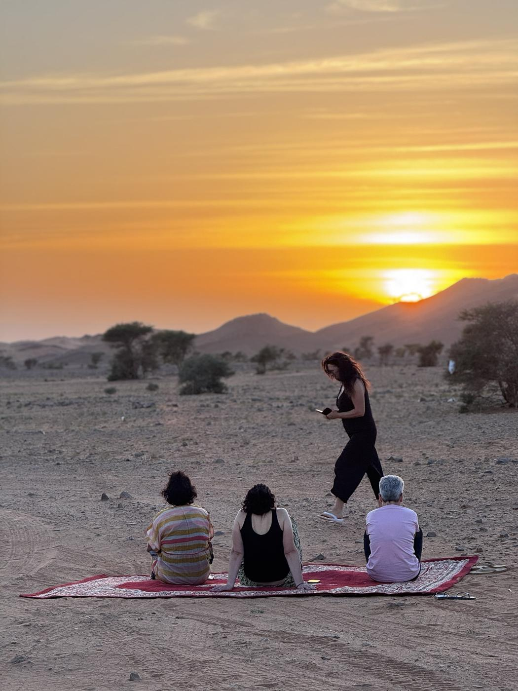
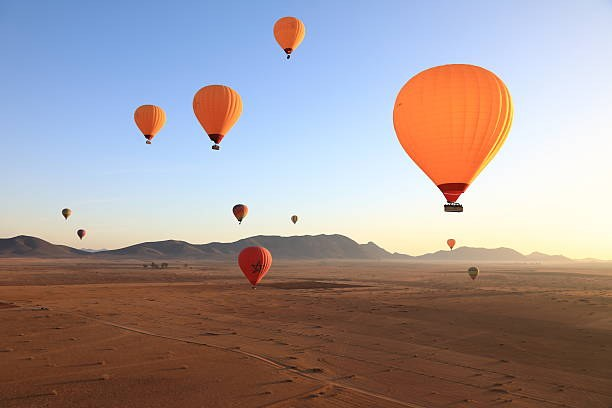
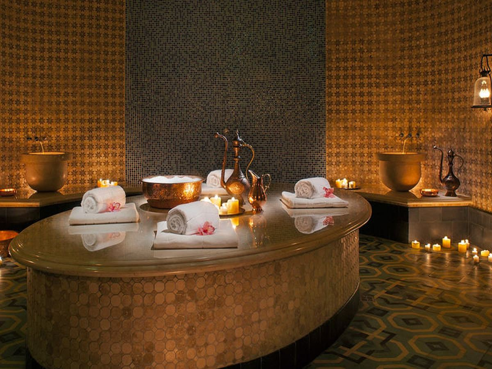

Morocco is one of the most romantic destinations close to Europe. In a single trip you can sleep in a riad lit by lanterns, share a hammam, watch the sunrise from a hot air balloon, ride camels side by side into the dunes and spend a night alone with the stars in the Sahara. And because distances are reasonable, you can do all of it in one or two weeks, without long flights between stops.
This guide is based on the honeymoons we organise every year: the best season, three itineraries, the most romantic experiences, where to stay and the practical details couples should know.
Why Morocco for a honeymoon?
- Variety: imperial cities, mountains, desert and ocean in one trip.
- Intimate places to stay: riads with only a few rooms around a courtyard, kasbah hotels and private desert tents.
- Close to Europe: two to four hours of flight from most European capitals, with almost no jet lag.
- Value: boutique riads, private drivers and fine dining cost much less than in many other honeymoon destinations.
- Unique experiences you will remember all your life: a candlelit dinner in the dunes is hard to forget.
The best time for a honeymoon in Morocco
| Season | For couples |
|---|---|
| Spring (March–May) | The best season: mild days, green valleys, roses in bloom in the Dades in May |
| Autumn (September–November) | Excellent: warm days, soft light, pleasant desert nights |
| Winter (December–February) | Sunny days and beautiful skies, but cold nights in the desert: choose a heated camp |
| Summer (June–August) | Very hot inland; better to focus on Marrakech riads with pools and the coast at Essaouira |
More details by month in the best time to visit Morocco.

Three honeymoon itineraries
5 days: Marrakech and the Sahara
Our Honeymoon in Morocco tour: over the High Atlas to Ait Ben Haddou and the Dades, a quiet walk in the Todra Gorge, a camel ride for two at sunset to a private tent in Erg Chebbi, a slow day around the dunes, and the way back by the oases of the Draa Valley. Add two or three nights in a Marrakech riad before or after.
8 days: Marrakech, the desert and the ocean
- Days 1–2: Marrakech, a riad in the medina, gardens and a hammam for two.
- Days 3–5: the Atlas, the gorges and a night in a luxury desert camp.
- Day 6: back to Marrakech, dinner on a rooftop.
- Days 7–8: Essaouira, the white and blue port on the Atlantic, for fresh fish and sunsets on the ramparts. See our Essaouira day trip.
10–12 days: the grand romantic tour
Start in Fes or Tangier with the blue lanes of Chefchaouen and the medina of Fes, cross the Middle Atlas to the Sahara, then continue through the gorges and kasbahs to Marrakech, and finish with a few lazy days by the sea. We build each of these routes around your dates and style.
The most romantic experiences in Morocco
A private night in the Sahara
Ride camels into the dunes as the sun goes down, arrive at your tent, have dinner by candlelight and lanterns, and look at a sky full of stars far from any city lights. In a luxury camp you have a real bed and a private bathroom; read luxury or standard desert camp.
A hot air balloon at sunrise
Near Marrakech, balloons lift off at dawn above the palm groves and Berber villages, with the snowy Atlas on the horizon. It is followed by a traditional breakfast in a tent.

A hammam for two
Many spas in Marrakech and Fes offer a hammam and an argan oil massage for couples, in candlelit marble rooms. Discover the ritual in our hammam guide.

Rooftop dinners and riad courtyards
Watch the sun set over the minarets of Marrakech from a terrace, then dine in a riad courtyard lit by lanterns and rose petals. Our guide to Marrakech in 3 days lists the best moments of the city.
The Agafay desert and the Atlas valleys
Less than an hour from Marrakech, the stone desert of Agafay offers sunset dinners and luxury tents for couples with little time. The Ourika valley and the Atlas villages are perfect for a gentle walk and a lunch by the river.
Sunset in Essaouira
The ramparts, the fishing port and the long beach of Essaouira are the perfect end to a honeymoon: fresh fish, calm riads and the sound of the ocean.
Where to stay as a couple
- Riads in the medinas of Marrakech and Fes: a few rooms around a courtyard with a fountain, rooftop terraces, often a small pool. Ask for a suite.
- Kasbah hotels in Ait Ben Haddou, Skoura or the Dades: earthen walls, palm groves and pools with views of the mountains.
- A luxury desert camp in Erg Chebbi: a tent with a real bed and private bathroom, and the option of a private dinner away from other guests.
- A riad by the sea in Essaouira for the last days.
Tell us it’s your honeymoon
When you book, let us know: on request and depending on availability, we ask the hotels to prepare a honeymoon setting in your room, and we can arrange a private dinner in the desert or a cake for the occasion.
Practical tips for couples
- Public affection: Morocco is a conservative country. Holding hands is fine, but keep kisses and hugs for your riad.
- Dress: cover shoulders and knees in the medinas and villages; in hotels and riads, wear what you like. See what to wear in Morocco.
- Marriage certificate: foreign couples are not asked for one. If one of you is Moroccan, many hotels will ask for a marriage certificate, so bring a copy.
- Book early for spring, autumn and the festive season: the best riads and private desert tents have only a few rooms.
- Don’t rush. A honeymoon is not a race: keep at least one free afternoon in each place.
Frequently asked questions
Is Morocco a good honeymoon destination?
Yes. It combines romantic riads, the Sahara, the mountains and the ocean in one trip, close to Europe and at a very good price for the quality.
How many days do we need for a honeymoon in Morocco?
Five days are enough for Marrakech and a night in the desert. Eight to ten days let you add Essaouira, Fes or Chefchaouen at a relaxed pace.
Can we have a private tent in the desert?
Yes. Our honeymoon tour includes a private tent in a desert camp, and on request we can arrange a private dinner away from other guests.
Is Morocco safe for couples?
Yes. Morocco is a safe country, and couples travel here every day. Respect local customs in public and you will feel welcome everywhere.
Can unmarried couples share a room in Morocco?
Foreign couples can share a room without any problem. The marriage certificate is usually asked only when one of the partners is Moroccan.
Keep reading: Our 5-day honeymoon tour · Luxury or standard desert camp · The Moroccan hammam